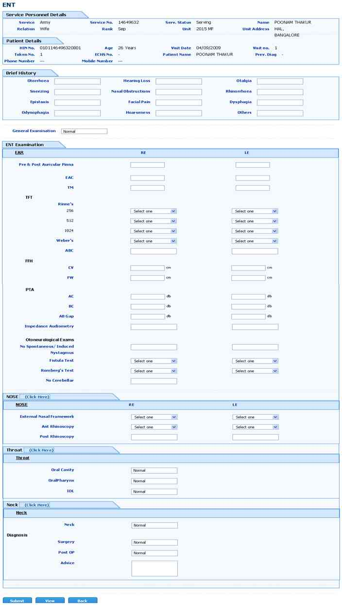

OPD ENT
Screen Overview
This screen will capture ENT case sheet details.

Service Personnel Details:
Based on selection of patient all service personal details will come from MI Room.
Patient Details:
Based on selection of patient all patient details will come from MI Room.
Otorrhoea:
User can write otorrhoea details.
Hearing Loss:
User can write hearing loss details.
Otalgia:
User can write otalgia details.
Sneezing:
User can write sneezing details.
Nasal Obstructions:
User can write nasal obstructions details.
Rhinorrhoea:
User can write rhinorrhoea details.
Epistaxis:
User can write epistaxis details.
Facial Pain:
User can write facial pain details.
Dysphagia:
User can write dysphagia details.
Odynophagia:
User can write odynophagia details.
Hoarseness:
User can write hoarseness details.
Others:
User can write other details.
General Examination:
User can write general examination details. It is default normal value will display.
EAR:
Pre & Post Auricular Pinna:
User can write patient pre and post auricular pinna details. It contains left Ear, Right Ear values.
EAC:
User can write EAC details. It contains left Ear, Right Ear values.
TM:
User can write TM details. It contains left Ear, Right Ear values.
Rinne's 256:
User can select from the list, It contains +, - and It contains left Ear, Right Ear values
Rinne's 512:
User can select from the list, It contains +, - and It contains left Ear, Right Ear values
Rinne's 1024:
User can select from the list, It contains +, - and It contains left Ear, Right Ear values
Weber's:
User can select from the list, It contains +, - and It contains left Ear, Right Ear values
ABC:
User can write ABC details. It contains left Ear, Right Ear values.
FFH CV:
User can write FFH CV details. It contains left Ear, Right Ear values. It will measure cm.
FFH FW:
User can write FFH FW details. It contains left Ear, Right Ear values. It will measure cm.
PTA AC:
User can write PTA AC details. It contains left Ear, Right Ear values. It will measure cm.
PTA BC:
User can write PTA BC details. It contains left Ear, Right Ear values. It will measure cm.
PTA AB Gap:
User can write PTA AB Gap details. It contains left Ear, Right Ear values. It will measure db.
Impedance Audiometry:
User can write Impedance Audiometry details. It contains left Ear, Right Ear values.
Otoneurological Exams:
No Spontaneous/ Induced/ Nystagmus:
User can write No Spontaneous, Induced, Nystagmus details. It contains left Ear, Right E
Fistula Test:
User can select from the list, It contains +, - and It contains left Ear, Right Ear values
Romberg's Test:
User can select from the list, It contains +, - and It contains left Ear, Right Ear values
No Cerebellar:
User can write No cerebellar details.
NOSE:
External Nasal Framework:
User can select from the list, it contains 1, 2, 3, 4, 5 and It contains left nose, Right nose values
Ant Rhinoscopy:
User can select from the list, it contains 1, 2, 3, 4, 5 and It contains left nose, Right nose values
Post Rhinoscopy:
User can write Post Rhinoscopy details. It contains left Ear, Right Ear values.
Throat:
Oral Cavity:
User can write oral cavity details. Default value is normal will display.
OralPharynx:
User can write oralpharynx details. Default value is normal will display.
IDL:
User can write IDL details. Default value is normal will display.
NECK:
User can write neck details. Default value is normal will display.
Surgery:
User can write surgery details. Default value is normal will display.
Post OP:
User can write post operative details. Default value is normal will display.
Advice:
User can write patient advice details. Default value is normal will display.
Submit (Button):
By clicking on submit button user can save the data.
View (Button):
By clicking on view button user can view the previous visit details.
Reset (Button):
Clicking on reset button, will clear the current or existing data.